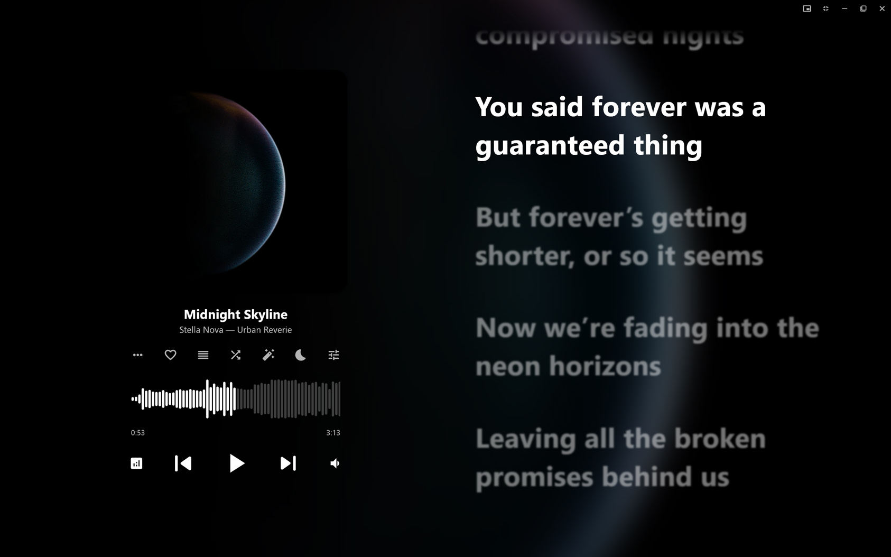
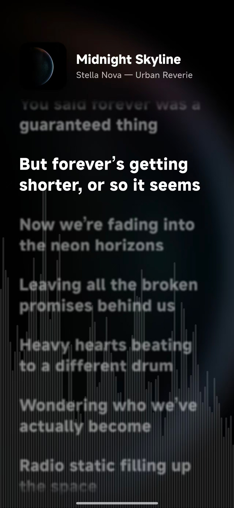

01 / LIBRARY
你的曲库，你做主
扫描本地文件夹，增量更新媒体库。按歌曲、专辑和艺术家浏览，不被平台的推荐算法打断。
↗LOCAL MUSIC, REFINED
Vynody 是一款以本地音乐播放为核心的跨平台播放器。整理标签、寻找歌词、管理收藏，一切都留在你的设备上。


一套体验，覆盖你的每一台设备
BUILT FOR YOUR LIBRARY
从第一次扫描文件夹，到整理好一张专辑，Vynody 把本地音乐日常里那些琐碎的事，做得更顺手。
扫描本地文件夹，增量更新媒体库。按歌曲、专辑和艺术家浏览，不被平台的推荐算法打断。
↗接入 LRCLIB 在线歌词，支持时间轴与缓存。还可以用 AI 生成、校准和翻译歌词。
↗通过音频指纹识别未知歌曲，结合 AcoustID 与 MusicBrainz 补全标签和封面。
↗在局域网内共享音乐文件和歌词缓存。单曲、文件夹，按你习惯的方式传输。
↗跟随音乐节奏的歌词显示，让阅读和聆听保持同步。
在工作、阅读或游戏时，也能保持对播放的掌控。
设置倒计时，或在播放完最后一首后停止。
OPEN SOURCE / CROSS-PLATFORM
Vynody 基于 Flutter 构建，使用 GPL-3.0 协议开源。下载适合你的版本，或参与项目。
前往 Releases ↗